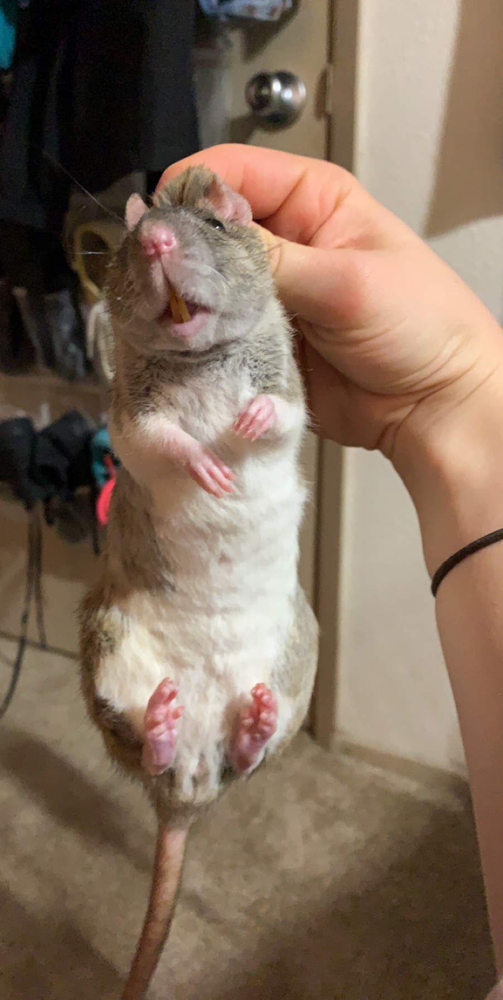
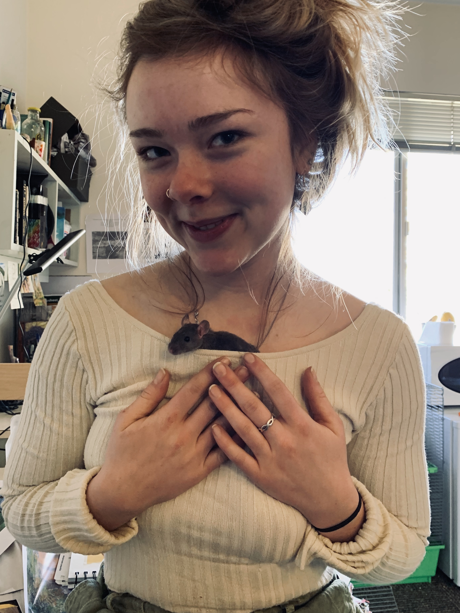

Also, she's my favorite because she gives the most kisses. Rats are very intelligent, and they know and love their human companions.
 Frida used to steal food from Artemis. Sometimes I had to separate them at dinnertime to make sure Artemis got any food in her tiny body. They seem to have learned to share now that they're adults.
I named her after one of my favorite female artists, Frida Kahlo. Although Artemis and Frida have been together their whole lives, they both been great sports in opening their home to Luna and Soleil.
Frida loves to run around inside my jackets, and I think its funny to walk around with no one knowing she's in there.